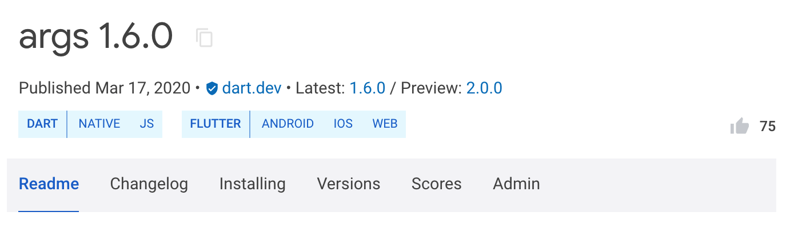

The pub package manager isn’t just for using other people’s packages.
It also allows you to share your packages with the world. If you have a useful
project and you want others to be able to use it, use the dart pub publish
command.
Publishing is forever
Keep in mind that publishing is forever. As soon as you publish your package, users can depend on it. Once they start doing that, removing the package would break theirs. To avoid that, the pub.dev policy disallows unpublishing packages except for very few cases.
You can always upload new versions of your package, but old ones will continue to be available for users that aren’t ready to upgrade yet.
For already published packages that are no longer relevant or being maintained, you can mark them as discontinued.
Preparing to publish
When publishing a package, it’s important to follow the pubspec format and package layout conventions. Some of these are required in order for others to be able to use your package. Others are suggestions to help make it easier for users to understand and work with your package. In both cases, pub tries to help you by pointing out what changes will help make your package play nicer with the Dart ecosystem. There are a few additional requirements for uploading a package:
-
You must include a
LICENSEfile. We recommend the BSD 3-clause license, which the Dart and Flutter teams typically use. However, you can use any license that’s appropriate for your package. You must also have the legal right to redistribute anything that you upload as part of your package. -
Your package must be smaller than 100 MB after gzip compression. If it’s too large, consider splitting it into multiple packages, using a
.pubignorefile to remove unnecessary content, or cutting down on the number of included resources or examples. -
Your package should depend only on hosted dependencies (from the default pub package server) and SDK dependencies (
sdk: flutter). These restrictions ensure that dependencies of your packages cannot become unavailable in the future. -
You must have a Google Account, which pub uses to manage package upload permissions. Your Google Account can be associated with a Gmail address or with any other email address.
Important files
Pub uses the contents of a few files to create a page for your
package at pub.dev/packages/<your_package>. Here are the files that
affect how your package’s page looks:
-
README.md: The
README.mdfile is the main content featured in your package’s page. The file’s contents are rendered as Markdown. For guidance on how to write a great README, see Writing package pages. -
CHANGELOG.md: Your package’s
CHANGELOG.mdfile, if found, is also featured in a tab on your package’s page, so that developers can read it right from pub.dev. The file’s contents are rendered as Markdown. -
The pubspec: Your package’s
pubspec.yamlfile is used to fill out details about your package on the right side of your package’s page, like its description, homepage, etc.
Advantages of using a verified publisher
You can publish packages using either a verified publisher (recommended) or an independent Google Account. Using a verified publisher has the following advantages:
- The consumers of your package know that the publisher domain has been verified.
- You can avoid having pub.dev display your personal email address. Instead, pub.dev displays the publisher domain and contact address.
- A verified publisher badge
 is displayed next to your package name on both search pages and individual package pages.
is displayed next to your package name on both search pages and individual package pages.
Creating a verified publisher
To create a verified publisher, follow these steps:
-
Go to pub.dev.
-
Log in to pub.dev using a Google Account.
-
In the user menu in the top-right corner, select Create Publisher.
-
Enter the domain name that you want to associate with your publisher (for example,
dart.dev), and click Create Publisher. -
In the confirmation dialog, select OK.
-
If prompted, complete the verification flow, which opens the Google Search Console.
- When adding DNS records, it may take a few hours before the Search Console reflects the changes.
- When the verification flow is complete, return to step 4.
Publishing your package
Use the dart pub publish command to publish your package for the first time,
or to update it to a new version.
Performing a dry run
To test how dart pub publish will work, you can perform a dry run:
$ dart pub publish --dry-run
Pub makes sure that your package follows the
pubspec format and
package layout conventions,
and then uploads your package to pub.dev. Pub also shows you all of
the files it intends to publish. Here’s an example of publishing a package
named transmogrify:
Publishing transmogrify 1.0.0
.gitignore
CHANGELOG.md
README.md
lib
transmogrify.dart
src
transmogrifier.dart
transmogrification.dart
pubspec.yaml
test
transmogrify_test.dart
Package has 0 warnings.
Publishing
When you’re ready to publish your package, remove the --dry-run argument:
$ dart pub publish
After your package has been successfully uploaded to pub.dev, any pub user can
download it or depend on it in their projects. For example, if you just
published version 1.0.0 of your transmogrify package, then another Dart
developer can add it as a dependency in their pubspec.yaml:
dependencies:
transmogrify: ^1.0.0
Transferring a package to a verified publisher
To transfer a package to a verified publisher, you must be an uploader for the package and an admin for the verified publisher.
Here’s how to transfer a package to a verified publisher:
- Log in to pub.dev with a Google Account that’s listed as an uploader of the package.
- Go to the package details page (for example,
https://pub.dev/packages/http). - Select the Admin tab.
- Enter the name of the publisher, and click Transfer to Publisher.
What files are published?
All files under the package root directory are included in the published package, with the following exceptions:
- Any hidden files or directories—that is,
files with names that begin with dot (
.) - Any directories with the name
packages - Files and directories ignored by a
.pubignoreor.gitignorefile
If you want different ignore rules for git and dart pub publish,
then overrule the .gitignore file in a given directory by
creating a .pubignore file.
(If a directory contains both a .pubignore file and a .gitignore file,
then dart pub publish doesn’t read that directory’s .gitignore file.)
The format of .pubignore files is the same as the
.gitignore file format.
To avoid publishing unwanted files, follow these practices:
- Either delete any files that you don’t want to include,
or add them to a
.pubignoreor.gitignorefile. - When uploading your package,
carefully examine the list of files that
dart pub publishsays it’s going to publish. Cancel the upload if any undesired files appear in that list.
Platform support
The pub.dev site detects which platforms a package supports, displaying these platforms on the package page. Users of pub.dev can filter searches by platform.
To change the automatically generated list of supported platforms, specify supported platforms in the pubspec.
Uploaders
Whoever publishes the first version of a package automatically becomes the first and only person authorized to upload additional versions of that package.
To allow or disallow other people to upload versions, either:
-
Manage authorized uploaders on the admin page for the package:
https://pub.dev/packages/<package>/admin. -
Transfer the package to a verified publisher; all members of a publisher are authorized to upload.
Locating the package publisher
If a package has a verified publisher, then the pub.dev page for that package displays the publisher domain.
For packages published without a publisher, the publisher is not disclosed for privacy reasons (the Publisher field just says “unverified uploader”).
Publishing prereleases
As you work on a package, consider publishing it as a prerelease. Prereleases can be useful when any of the following are true:
- You’re actively developing the next major version of the package.
- You want beta testers for the next release candidate of the package.
- The package depends on an unstable version of the Dart or Flutter SDK.
As described in semantic versioning, to make a prerelease of a version
you append a suffix to the version. For example, to make a prerelease of
version 2.0.0 you might use the version 2.0.0-dev.1. Later, when you
release version 2.0.0, it will take precedence over all 2.0.0-XXX prereleases.
Because pub prefers stable releases when available, users of a prerelease package
might need to change their dependency constraints.
For example, if a user wants to test prereleases of version 2.1, then
instead of ^2.0.0 or ^2.1.0 they might specify ^2.1.0-dev.1.
When a prerelease is published to pub.dev,
the package page displays links to both the prerelease and the stable release.
The prerelease doesn’t affect the analysis score, show up in search results,
or replace the package README.md and documentation.
Publishing previews
Previews can be useful when all of the following are true:
-
The next stable version of the package is complete.
-
That package version depends on an API or feature in the Dart SDK that hasn’t yet been released in a stable version of the Dart SDK.
-
You know that the API or feature that the package depends on is API-stable and won’t change before it reaches the stable SDK.
As an example, consider a new version of package:args that has
a finished version 2.0.0 but that
depends on a feature in Dart 2.12.0-259.8.beta,
where Dart SDK version 2.12.0 stable hasn’t been released yet.
The pubspec might look like this:
name: args
version: 2.0.0
environment:
sdk: '>=2.12.0-259.8.beta <3.0.0'
When this package is published to pub.dev,
it’s tagged as a preview version,
as illustrated by the following screenshot,
where the stable version is listed as
1.6.0 and the preview version is listed as 2.0.0.

When Dart 2.12.0 stable is released,
pub.dev updates the package listing to display
2.0.0 as the stable version of the package.
If all of the conditions at the beginning of this section are true,
then you can ignore the following warning from dart pub publish:
“Packages with an SDK constraint on a pre-release of the Dart SDK should themselves be published as a pre-release version. If this package needs Dart version 2.12.0-0, consider publishing the package as a pre-release instead.”
Retracting a package version
To prevent new package consumers from adopting a recently published version of your package, you can retract that package version within 7 days of publication. The retracted version can be restored again within 7 days of retraction.
A retracted package version isn’t deleted. It appears in the version listing of the package on pub.dev in the Retracted versions section. Also, the detailed view of that package version has a RETRACTED badge.
Before retracting a package, consider publishing a new version instead. Retracting a package causes churn and can have a negative impact on package users.
If you accidentally publish a new version with either a missing dependency constraint or a dependency constraint that is too lax, then retracting the package version might be the only solution. Publishing a newer version of your package is insufficient to stop the version solver from picking the old version, which might be the only version pub can choose. By retracting the package version that has incorrect dependency constraints, you force users to either upgrade other dependencies or get a dependency conflict.
However, if your package merely contains a minor bug,
then retraction is probably not necessary.
Publishing a newer version with the bug fixed and a
description of the fixed bug in CHANGELOG.md
helps users to understand what happened.
And publishing a newer version is less disruptive to package users.
How to use a retracted package version
If a package depends on a package version that later is retracted,
it can still use that version as long as that version is in
the dependent package’s pubspec.lock file.
To depend on a specific version that’s already retracted,
the dependent package must pin the version in the
dependency_overrides section of the pubspec.yaml file.
How to retract or restore a package version
To retract or restore a package version, first sign in to pub.dev using a Google Account that’s either an uploader or a verified publisher admin for the package. Then go to the package’s Admin tab, where you can retract or restore recent package versions.
Marking packages as discontinued
Although packages always remain published, it can be useful to signal to developers that a package is no longer being actively maintained. For this, you can mark a package as discontinued. A discontinued package remains published and viewable on pub.dev, but it has a clear DISCONTINUED badge and doesn’t appear in pub.dev search results.
To mark a package as discontinued, first sign in to pub.dev using a Google Account that’s either an uploader or a verified publisher admin for the package. Then go to the package’s Admin tab, where you can mark the package as discontinued. If you change your mind, you can remove the discontinued mark at any time.